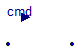

| Name | Description |
|---|---|
| WaterPump_Volumetric | |
| WaterPump_Centrifugal |

Extends from Interfaces.Water.PartialTwoPort_water (Partial component with two ports).
| Type | Name | Default | Description |
|---|---|---|---|
| VolumeFlowRate | qmax | 0.0005 | volume flowrate at cmd=1 [m3/s] |
| VolumeFlowRate | qstart | 0 | [m3/s] |
| Time | T | 0.5 | pump TC [s] |
| Type | Name | Description |
|---|---|---|
| WaterFlange | water_flange2 | |
| WaterFlange | water_flange1 | |
| input RealInput | cmd |
Extends from Interfaces.Water.PartialTwoPort_water (Partial component with two ports).
| Type | Name | Default | Description |
|---|---|---|---|
| Pressure | DP0 | 5000 | DP at w=0, cmd=1 [Pa] |
| Real | DP1 | 200 | pressure decr. ratio, cmd=1 Pa/(kg/s)^2 |
| Time | T | 0.5 | pump TC [s] |
| Real | cmdstart | 0 |
| Type | Name | Description |
|---|---|---|
| WaterFlange | water_flange2 | |
| WaterFlange | water_flange1 | |
| input RealInput | cmd |